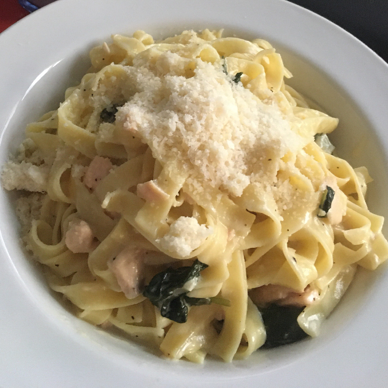

Ingredients in storage
Salmon Pasta

Easy to make pasta. You can exchange the pasta for whole wheat pasta, or any other pasta if you like. Also the cooking wine and parmasan cheese can be removed.
- 1. Cook the pasta as instructed on the package.
- 2. Dice the salmon and finely chop the garlic. Scrub the lemons in lukewarm water. Grate some lemon peel and then squeeze the lemon juice into a bowl.
- 3. Mince the garlic in a pan the oil for a few minutes.
- 4. Add the cooking cream, the lemon peels, lemon juice and the salmon to the pan. Bring to a boil over medium-high heat and cook for about 10 minutes.
- 5. Add the white cooking wine and the spinach. Stir carefully and let boil for another 5 minutes.
- 6. Use salt and pepper to your desire. Toss the sauce together with the pasta and stir before adding to a bowl or plate. Top it off with shreded parmasan cheese
- Done
Ingredients needed